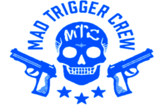
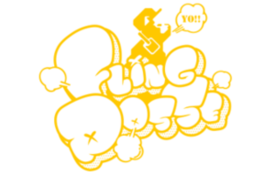
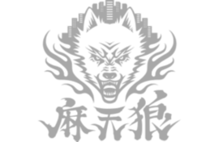
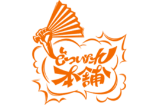

Buster Bros!!! es el grupo de rap representativo de la división
Ikebukuro. El equipo está conformado por los tres hermanos Yamada:
Ichiro Yamada, Jiro Yamada y Saburo Yamada. Es el equipo con los
miembros más jóvenes. Los tres hermanos son caracterizados por su
coordinación, produciendo palabras inteligentes y expresando las
ideas del hermano mayor con rimas superiores.
Ichiro Yamada (MC.B.B)
"Nunca encontrarás un arcoiris si miras hacia abajo"
Es un antiguo miembro de "The Dirty Dawg", y "Naughty Brothers" el hijo
mayor de la familia Yamada, y propietario de Odd Jobs Yamada. Antes era
un delincuente tan infame que se decía que no había una sola persona en
Ikebukuro que no conociera su nombre.
Es una persona muy compasiva, con un profundo sentido de la justicia,
que no se atreve a ignorar a los necesitados. Todo el mundo le admira
por lo bien que cuida de sus hermanos pequeños. Como empollón empedernido,
sus aficiones incluyen ver anime, y estar al día de las últimas novelas
ligeras.
Él y sus hermanos han sido huérfanos (se desconoce desde hace cuánto),
por lo que comenzó a trabajar desde los 14 años para tratar de darles una
mejor vida. Después de un incidente con el dueño del orfanato en ese
momento, sus hermanos comenzaron a odiarlo, hasta negar que es su hermano.
Actualmente viven juntos, y siempre los protege.
Él y Samatoki Aohitsugi, líder de la División de Yokohama, se odian a
muerte.
Jiro Yamada (MC.M.B)
“No dejamos de jugar porque maduramos.
Maduramos porque dejamos de jugar.”
Segundo hijo de la casa Yamada. Es un fuerte luchador, e idolatra a Ichiro
Yamada, que es querido por todos. Creció cuidando las espaldas de su hermano
mayor, y por eso se convirtió en un delincuente como él. Al igual que Ichiro,
odia a los matones. Debido a la influencia de su hermano mayor, conoce bien
el anime y las novelas ligeras. Cualquiera que se burle de su hermano mayor
será aplastado (o será devorado), y siempre se pelea con Saburo Yamada.
Saburo Yamada (MC.S.B)
❝Todo lo que sube, baja. Y todo lo que crece, envejece❞
Tercer hermano de la familia Yamada, y el más joven en Buster Bros!!!.
Es un genio que puede hacer casi cualquier cosa. A diferencia de sus
hermanos, no fue un delincuente. Respeta y admira a Ichiro. En un
principio pensó en convertirse en un delincuente, pero después de que
Jiro comenzó a seguir los pasos de Ichiro, decidió no hacerlo.
Generalmente tiene buen comportamiento, pero ridiculizará a alguien
en el momento en que crea que está debajo de él. Sus pasatiempos son
los juegos de mesa y las cartas. Debido a su personalidad retorcida,
no tiene muchos amigos. Quiere a alguien que pueda estar siempre
con él.
MAD TRIGGER CREW

Abreviado como "M.T.C" es el grupo que representa a Yokohama, que
consiste en el veterano de la marina "Rio Mason Busujima", el
policía "Jyuto Iruma", y el lider Yakuza "Samatoki Aohitsugi"
El loco grupo criminal que controla el area de Yokohama como
campeones de la justicia, y maldad, destruyendo a otros equipos
con su espíritu de lucha, al momento en que se enfrentan a sus
letras. Después de un semi-exitosa redada anti-drogas, Jyuto,
fue contactado por Samatoki, quien le ofreció formar un grupo juntos.
Jyuto aceptó la oferta y construyo una asociacióin mutualmente
beneficiosa con Samatoki, y su clan. Mientras trabajaba en un caso,
conoce a Rio, y lo ve como un potencial tercer miembro para el
equipo, por lo cual decide reclutarlo. A pesar de la hostilidad
inicial entre Samatoki y Rio, unieron fuerzas luego de haber sido
emboscados por un grupo de criminales. En deuda con Samatoki, y Jyuto
por ayudarle contra los criminales, Rio decidió unirseles, y así
formaron "MAD TRIGGER CREW".
El grupo fue fuertemente inspirado por el hip-hop del oestem, con
un estilo brutal, y violento, ya que sus miembros estan conectados
al mundo criminal, y militar. Sus canciones normalmente cubren temas
oscuros, como los crimenes, la justicia, y la muerte. Uno de sus temas
más importantes, es la lealtad, ya que los 3, usan su poder individual
para amplificarse entre ellos.
Samatoki Aohitsugi (Mr.Hc)
"La vida no es justa"
Es antiguo miembro de The Dirty Dawg, y segundo al mando
(wakagashira)
del clan yakuza Katengumi, con sede en Yokohama.
Tiene el ceño perpetuamente fruncido y es rápido para iniciar una pelea
si algo le disgusta, pero nunca levantaría la mano contra una mujer.
También puede ser bastante amable y aprecia a la familia, especialmente,
atesora a su hermana, y el brazalete que ella le hizo. La razón por la
cual se convirtio en yakuza, fue solamente para encontrarla, luego de
haber perdido el contácto. Cuando no está enfadado, es bastante
relajado, y se lleva bien con la gente, siempre que no sean unos
sinvergüenzas.
El y Ichiro, de la división Ikebukuro, se odian a muerte.
Rio Mason Busujima (Crazy M)
"Me someto ante ti como un hombre que aun no descubre por
que morirá, no se ajusta a vivir."
Ex sargento de primera clase de las Fuerzas Navales, y miembro de la
Unidad de Operaciones Especiales de Exterminio. Mitad estadounidense
por parte de su padre, y mitad japonés por parte de su madre. Habla
y se comporta como si aún fuera un soldado, y sigue prefiriendo vivir
un estilo de supervivencia en el bosque. Durante su época de oficial
de la marina, respetaba el rango por encima de todo. Por ejemplo, si
un superior le decía que el blanco era negro, entonces el blanco era
negro. No tiene piedad con sus enemigos, ya que si no lo hiciera, sería
irrespetuoso contra su rival. Dicho esto, es más tranquilo en tiempos
de paz y le gusta ayudar a la gente, incluso le dió a Dice una gran
suma de dinero, sin esperar a que este le devuelva la plata. Su afición
es cocinar alimentos que sirvan para un fin práctico, y sus habilidades
en la cocina, son las de un profesional, pero por alguna razón, Samatoki
y Jyuto le temen.
Jyuto Iruma (45 Rabbbit)
❝El que no tiene suficiente valentía para tomar riesgos,
no logrará nada en la vida.❞
Un sargento de policía en activo de la Unidad de Crimen Organizado del
Departamento de Policía de Yokohama. Es un policía muy experimentado en
el mundo de la yakuza, y está dispuesto a investigar a través de medidas
ilegales, aunque odia las drogas ilegales que llevaron a la muerte de
sus padres, y su colega. Utilizará cualquier medio para conseguir sus
objetivos. Mantiene una relación mutuamente beneficiosa con Samatoki
Aohitsugi, del Katengumi.
Fling Posse

La division que representa a Shibuya. Los miembros son el apostador
Dice Arisugawa, el novelista Gentaro Yumeno, y su lider el diseñador
de ropa Ramuda Amemura.
Sus fans los adoran debido a las distintivas características de sus
actuaciones, desbordando con un estilo pop, y provocando a sus
oponentes.
El logo de Fling Posse es una referenciá a Hachiko, cuya estátua se
encuentra afuera de la estación de Shibuya, y el cumpleaños de cada
uno de los miembros hace referencia a un aspecto de su personalidad,
o comportamiento.
Ramuda, que usualmente muestra una actitúd dulce y despreocupada,
nació el 14 de Febrero, el dia de San Valentín. Gentaro, que tiende
a engañar a la gente, nació el 1 de Abril, el día de los inocentes.
Dice, que ama las apuestas, y otros juegos basados en suerte, nació
el 7 de julio (7/7).
Todos los miembros un patrón brillante en su atuendo. En el broche
del cuello de Ramuda, en la capa de Gentaro, y en el diseño del saco
de Dice.
Ramuda Amemura (easy R)
"El optimista ve la dona, el pesimista ve el hoyo."
Es un diseñador de moda, antiguo miembro
de "The Dirty Dawg", y lider de actual de Fling Posse.
Es productor de la marca de ropa "Empty Candy". Parece chico
como un estudiante de primaria, pero es calculador, e ingenioso, y
siempre sabe exactamente lo que la gente piensa sobre el. Aunque a
veces, sin darse cuenta, hace comentarios con falta de tacto en
sus palabras. Es muy popular con las mujeres gracias a su lindura,
pero aunque su popularidad sea muy alta, nunca juega con
favoritos. Está conectado con Chuoku, y guarda un secreto que no
se lo puede contar a nadie. Tiene una relación de perro y
gato con Jakurai, lider de Matenro.
Gentaro Yumeno (Phantom)
"¿Para qué quieres un significado?
La vida es un deseo, no hay significado."
Es un escritor que se viste como
un intelectual de alguna era pasada. Le gusta hacer historias
sobre la vida de los extraños con los que se cruza en la calle. Es
un mentiroso extrremadamente persuasivo, y a veces, esas mentiras
pasarían desapercibidas si no fuese por su hábito de molestar a la
gente crédula diciendoles "Eso era solo una mentira".
Su apellido probablemente sea una referencia al autor Yumeno
Kyusaku, quien se centraba en escribir novelas basadas en el
surrealismo, y romanticismo.
Dice Arisugawa (Dead or Alive)
❝Ama la vida que amas. Vive la vida que amas.❞
Es un apostador tan adicto al juego, que no solo apostará
toda la plata que tiene, si no que también su vida, por la apuesta
correcta.
No hay nada que odie más que la frase "seguir el buen camino", y
solo sobrevivió tanto como lo hizo por el simple hecho de su
extraordinaria suerte con la que nació. Toma todas sus decisiones
tirando el dado que carga con el. Tan a menudo como se encuentra
sin plata, es igual de rápido para apegarse a cualquiera que lo
alimente.
Su vida se basa en el lema de "Ama la vida que vives, vive la vida
que amas".
Matenro

Reprenstantes de la division de Shinjuku, la ciudad que nunca
duerme. El equipo consiste en el asalariado japonés Doppo
Kannonzaka, el host Hifumi Izanami, y su lider, el Dr. Jakurai
Jinguji. Son los ganadores de la primera batalla de rap. Con
su misteriosa atmósfera, y ritmo único, atraen a otros con su
increible flow.
Los kanji de "Matenro" significan "rascacielos", que es un guiño a
Shinjuku teniendo algunos de los más altos rascacielos de Japón.
También contiene el kanji de "Lobo", que aparece en su logo. Los
apellidos de cada uno de los miembros contienen patrones asociados
con la religión, y diosas de la mitología japonesa. Jinguji
significa "templo celestial", Izanami es el nombre de la diosa
sintoista de la creación, y Kannon (Guan Yin en chino), es una diosa
Bodhisattva
asociada con el budismo Mahayana en el este de Asia.
Todos los miembros llevan una cruz plateada. Se encuentran en los
botones de la remera de Jakurai, en el cinturón, y collar de Hifumi,
y en el clip de la corbata de Doppo.
Jakurai Jinguji (ill-DOC
❝El solo significado de la vida, es servir a la humanidad.❞
Es miembro antiguo de The Dirty Dawg, y actual lider de Matenro,
y considerado un genio como doctor.
En un principio fue contratado para eliminar terroristas. Luego se
convirtio en un doctor para expiarse por su estilo de vida
pecaminoso. Aunque a veces va a areas de comflicto alrededor del
mundo, actualmente es practicante en el "Hospital Central de
Shimjuku".
Sus hábitos para tomar son terribles, y una vez que toma, hace un
alboroto en dialecto Edo. Tiene una relación de gato y perro con
Ramuda, el lider de la division de Shibuya.
Su alto, y largirucho cuerpo está envuelto en un aura de misterio,
y puede usar su flow único para rejuvenecer a la gente que lo
escuche.
Hifumi Izanami (GIGOLO)
❝Hoy es el primer día del resto de tu vida.❞
Es un host, y trabaja en el club "Fragance" en Habukicho. Hifumi
irradia un aura de confianza y carisma a primera vista. Sin embargo,
a diferencia de la impresión que causa por su naturaleza gregaria, y
despreocupada, Hifume está completamente asustado de las mujeres.
La razón por la que se convirtio en host fue para superar su
miedo, y luego de un arduo esfuerzo, aprendió a transofrmarse en
un mujeriego cuando se pone su traje.
Hifumi es extremadamente diestro, y tiene una gran variedad de
hobbies fuera, o dentro de su casa.
El, y Doppo, se conocen desde la primaria, y suele arreglarle a
Doppo los trajes rotos. También comparten el mismo apartamento
Doppo Kannonzaka (DOPPO)
❝El mundo de verdad es mucho mas pequeño que el imaginario.❞
Es un asalariado japonés representante de ventas en la empresa
fabricante de equipos médicos "E.L. Medical Co., Ltd". Sus mas
notables características, es que no tiene ninguna característica
notable. Es un pesimista, y piensa de todo en forma negativa,
razón por la cual su único amigo es Hifumi, y estuvieron juntos
desde la primaria.
A pesar de la cantidad de situaciónes horribles en las que se
econtró gracias a Hifumi, está agradecido de tenerlo cerca.
Dotsuitare Honpo

El grupo que representa a Osaka. El equipo consiste en el estafador
Rei Amayado, el profesor Rosho Tsutsujimori, y su lider el
comediante Sasara Narude.
La parte principal del logo de su division es un abanico llamado
Harisen ,
normalmente usado en los actos de comedia Manzai. Todos los miembros
usan un pin con la forma de ese abanico. Se pueden ver el las
camperas de Sasara y Rosho, y en el sombrero de Rei
Sasara Narude (Tragic Comdey)
❝Solo yo puedo cambiar mi vida. Nadie puede
hacerlo por mí.❞
Es un comediante
Manzai, y lider de Dotsuitare Honpo.
Aunque en el escenario es un genio en hacer reir a la gente, por
alguna razon, en privado, repite chistes malos. El y Rosho estaban
juntos en un duo Manzai como "Dotsuitare Honpo", pero se
disolvieron, y ahora traba como solo. Más tarde el nombre
"Dotsuitare Honpo" pasó a ser su nombre de equipo
Rosho Tsutsujimori (WISDOM)
❝Cualquiera que nunca haya cometido un error nunca ha
intentado nada nuevo.❞
Es un profesor de matemáticas en la
"Secundaria privada Gyoshin", en Osaka. Como profesor, es amado
por sus estudiantes.
Solía estar en un duo de comedia con Sasara Narude, pero
debido a un evento traumático, hasta el día de hoy, tiene un
pánico escénico paralizante, y ya no puede hablar bien frente a
multitudes grandes. Normalmente habla japonés normalmente, pero en
frente de sus amigos, o cuando se enoja mucho, baja su guardia, y
habla con el dialecto Kansai.
Rei Amayado (MC MasterMind)
❝Una vida no es importante, excepto en el impacto que tiene
en otras vidas.❞
Es un estafador, el creador de
los Hypnosis Mic, y padre de los hermanos Yamada. Originalmente
estaba afiliado al departamento militar de desarrollo técnico,
involucrado con Chuuoku, y otras divisiones, mientras opera detras
de escenas, aunque esta especulacion está envuelta en misterio.
Así de carismatico como es, no para frente a nada para llevar a
cabo sus planes. Y aunque siempre mantenga un comportamiento
arrogante, y no nos muestre sus intenciones reales, al mismo
tiempo es un hombre de palabra, y con un gran sentido de deber.
Bad Ass Temple
El grupo que representa a Nagoya compuesto por el Abogado "Hitoya
Amagumi", el cantante de banda Visual-kei "Jyushi Aimono", y su
lider, el monje budhista "Kuko Harai". Los 3 miembros llevan puesto
un simbolo de un rayo en alguna parte de su atuendo. Están en la
campera de Kuko, los pendientes de Jyushi, y en los pines del collar
de Hitoya
Kuko Harai (Evil Monk)
"No vale la pena tener libertad si no incluye la libertad en
cometer errores"
Es el lider de Bad Ass Temple, y es el heredero de un renombrado templo
budista. A la edad de 14 años logró una vida ascética, que su padre
Shakku no pudo lograr. Tiene una boca sucia no apropiada para un monje,
y vive con el principio de nunca traicionar a sus amigos.
Fue parte de Naughty Busters junto a Ichiro Yamada en Ikebukuro.
Jyushi Aimono (14th Moon)
“Nunca, nunca, nunca, nunca te rindas”
Es el vocalista de ArgoξOrchestra, una banda
Visual-Kei. Al momento de conocer a alguien por primera vez o está
nervioso, su personalidad cambia y habla en un tono pomposo y
exagerado. Cuando era estudiante, sufrió de bullying muy severo.
En ese momento, Hitoya abogó por él y desde entonces se ha ganado
el respeto de Jyushi. Es un llorón narcisista. No tiene muchos
amigos, pero adora a su peluche de cerdo llamado 'Amanda'.
Hitoya Amaguni (Heaven & Hell)
❝Creo que llegar a la luna es mi objetivo. Incluso si no
llega.❞
Es un abogado, y el representante del Bufet de Abogados Amaguni,
que asumirá cualquier caso por la cantidad correcta de dinero.
Sin embargo, odia el acoso y está dispuesto a representar a sus
víctimas pro bono debido a que su hermano terminó su propia vida
después de ser acosado duramente. A pesar de tener una lengua afilada,
tiene un corazón de oro.
Un amigo de la infancia de Jackurai Jinguji de la División
Shinjuku, a quien conocía desde la escuela secundaria.